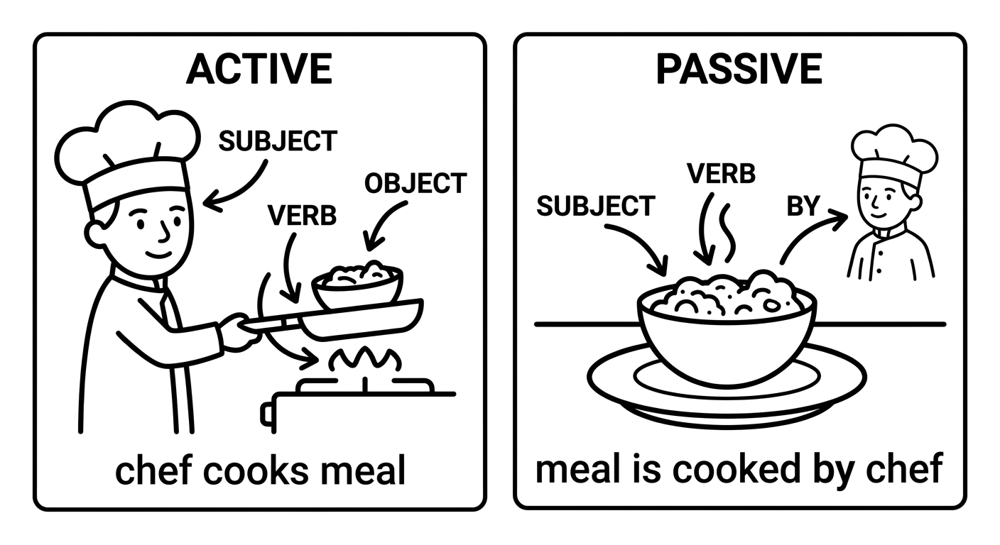
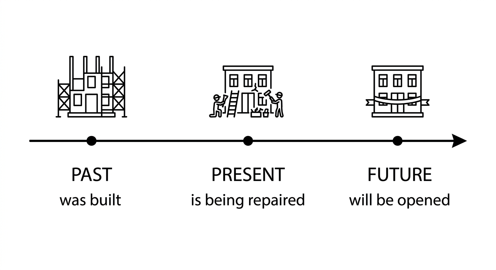
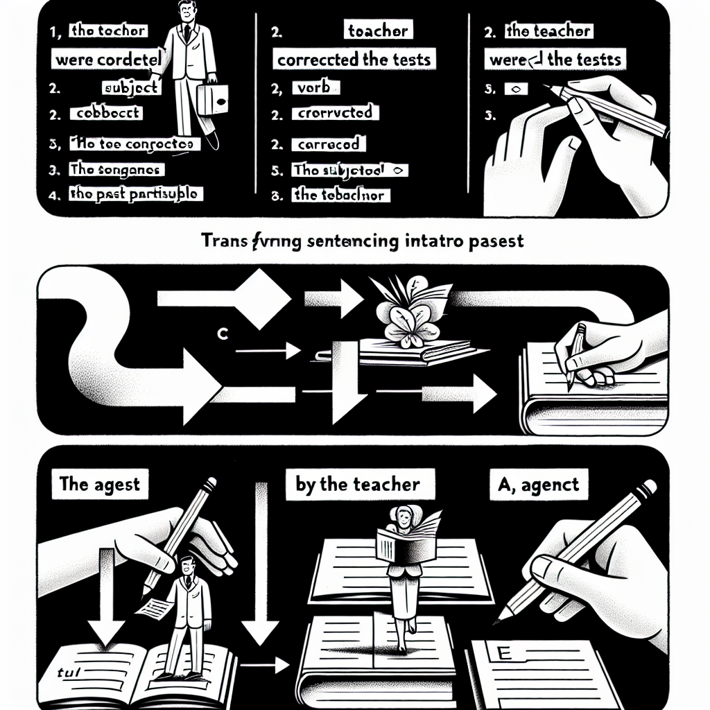
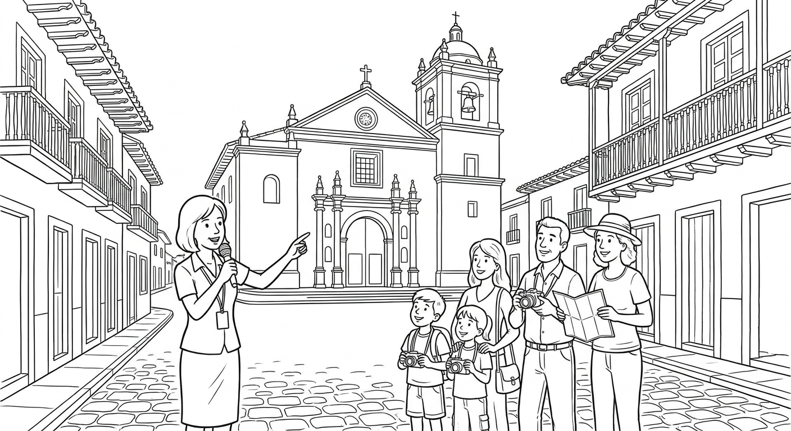

Customer Service: What Was Lost, Canceled, or Declined
Use the Passive Voice to report what happened to a payment, reservation, order, or personal item and request a practical solution.

Report a payment, booking, delivery, or lost-item problem, answer follow-up questions, and request a solution politely.
| Purpose | Useful language |
|---|---|
| Report the problem | My card was declined. / My reservation has been canceled. |
| Describe an incorrect result | I was charged twice. / I was served the wrong dish. |
| Request action | Can the payment be checked? / Could a new room be arranged? |
| Repair communication | Could you explain why it was canceled? / What do you mean by “pending”? |
Listen twice and write short answers.
What was canceled?
Maya's hotel reservation was canceled.What had already been processed?
Her payment had already been processed.How was the problem resolved?
A new room was arranged and the extra charge was refunded.0–15: mission and listening. 15–45: passive formula in service phrases. 45–80: one transformation and one contextual practice task. 80–115: Mission Lab. 115–120: exit check. Historical passive examples are extension, not the class mission.
Read twice: Maya: “My reservation was canceled, but my payment had already been processed.” Agent: “I am sorry. The booking was removed because of a system error.” Maya: “Could you explain what can be done?” Agent: “A new room has been arranged, and the extra charge will be refunded.” Maya: “When will the refund be processed?” Agent: “Within five business days.”
Passive Voice — Formation
In an active sentence, the subject performs the action. In a passive sentence, the subject receives the action.
| Voice | Structure | Example |
|---|---|---|
| Active | Subject + verb + object | The chef prepares the meal. |
| Passive | Subject + be + past participle (+ by agent) | The meal is prepared by the chef. |
Key formula: Subject + form of be + past participle (+ by + agent)
- The object of the active sentence becomes the subject of the passive sentence.
- The subject of the active sentence becomes the agent (introduced by "by").
- The verb changes to be + past participle.
The form of be changes according to the tense, but the main verb is always in the past participle form.
| Tense | Passive Structure | Example |
|---|---|---|
| Present Simple | am/is/are + past participle | Coffee is grown in Brazil. |
| Past Simple | was/were + past participle | The letter was written yesterday. |
| Present Perfect | has/have been + past participle | The report has been finished. |
| Future (will) | will be + past participle | The results will be announced tomorrow. |
| Present Continuous | am/is/are being + past participle | The road is being repaired right now. |
| Past Continuous | was/were being + past participle | The house was being painted when I arrived. |
| Modal (can/must/should) | modal + be + past participle | This form must be signed by a parent. |

Active to Passive — Transformation Examples
Active: Millions of people speak English worldwide.
Passive: English is spoken by millions of people worldwide.
Active: Alexander Graham Bell invented the telephone.
Passive: The telephone was invented by Alexander Graham Bell.
Active: Someone has stolen my bicycle.
Passive: My bicycle has been stolen.
Active: The company will deliver the package tomorrow.
Passive: The package will be delivered tomorrow.
Active: Workers are building a new bridge.
Passive: A new bridge is being built.
Active: Students must complete the assignment by Friday.
Passive: The assignment must be completed by Friday.

Use the passive voice when:
- The agent is unknown: "My car was stolen last night." (We don't know who did it.)
- The agent is unimportant: "The windows are cleaned every week." (It doesn't matter who cleans them.)
- The agent is obvious: "The suspect was arrested." (Obviously by the police.)
- You want to emphasize the action or result: "A new hospital has been built in the city center."
Suggested time: 30 minutes
Key concept: Emphasize that the passive is NOT about memorizing rules for each tense, but understanding the pattern: be + past participle. Once students see the pattern, they can form the passive in any tense by changing only the form of "be."
Activity: Write 5 active sentences on the board. Have students work in pairs to transform them into passive. Then discuss: which version sounds more natural in each context?
Rewrite each active sentence in the passive voice. Keep the same tense.
They clean the classrooms every day. (Present Simple)
The classrooms are cleaned every day.The classrooms are cleaned ✓ — o objeto ("the classrooms", plural) vira sujeito; present simple passivo = are + particípio (cleaned). Agente ("they") é genérico, então some.
✗ Erro comum: is cleaned — o "be" precisa concordar com "classrooms" (plural → are, não is).
✗ Erro comum: are clean — depois de "are" usa-se o PARTICÍPIO (cleaned), não o adjetivo/base.
A famous architect designed this building. (Past Simple)
This building was designed by a famous architect.This building was designed by a famous architect ✓ — o objeto ("this building", singular) vira sujeito; past simple passivo = was + particípio (designed). O agente é específico/importante, então mantém-se com "by".
✗ Erro comum: were designed — sujeito singular pede "was", não "were".
✗ Erro comum: was design — depois de "was" vem o particípio (designed), não a base.
The government has approved the new law. (Present Perfect)
The new law has been approved by the government.The new law has been approved by the government ✓ — present perfect passivo = has/have been + particípio (approved). "The new law" é singular → has been.
✗ Erro comum: have been approved — sujeito singular pede "has", não "have".
✗ Erro comum: has approved — isso é ativo; falta o "been" antes do particípio para virar passiva.
They will announce the winner next week. (Future)
The winner will be announced next week.The winner will be announced next week ✓ — futuro passivo = will be + particípio (announced). O agente ("they") é genérico, então some.
✗ Erro comum: will announced — falta o "be"; a passiva precisa de will + BE + particípio.
✗ Erro comum: will be announce — depois de "be" vem o particípio (announced), não a base.
Someone broke the window during the storm. (Past Simple)
The window was broken during the storm.The window was broken during the storm ✓ — past simple passivo = was + particípio. "break" é irregular: particípio = broken. O agente ("someone") é desconhecido, então some.
✗ Erro comum: was broke — "broke" é passado simples (ativo); na passiva usa-se o PARTICÍPIO "broken".
✗ Erro comum: were broken — "the window" é singular → was, não were.
People speak Portuguese in Brazil. (Present Simple)
Portuguese is spoken in Brazil.Portuguese is spoken in Brazil ✓ — present simple passivo = is + particípio. "speak" é irregular: particípio = spoken. "people" é gente em geral, então o agente some.
✗ Erro comum: is spoke — "spoke" é passado simples; o particípio é "spoken".
✗ Erro comum: are spoken — "Portuguese" é singular → is, não are.
The police have arrested two suspects. (Present Perfect)
Two suspects have been arrested by the police.Two suspects have been arrested by the police ✓ — present perfect passivo = have/has been + particípio (arrested). "Two suspects" é plural → have been.
✗ Erro comum: has been arrested — sujeito plural pede "have", não "has".
✗ Erro comum: have arrested — isso é ativo; falta o "been" para formar a passiva.
Workers are repairing the road right now. (Present Continuous)
The road is being repaired right now.The road is being repaired right now ✓ — present continuous passivo = am/is/are being + particípio (repaired). "The road" é singular → is being.
✗ Erro comum: is repaired — perde o "being"; sem ele vira present simple, não continuous.
✗ Erro comum: is being repair — depois de "being" vem o particípio (repaired), não a base.
Fill in the blanks with the correct passive form of the verb in parentheses. Pay attention to the tense indicated.
is spoken ✓ — present simple passivo = is + particípio. "English" é singular → is; particípio irregular de "speak" = spoken.
✗ Erro provável: is speak — usou a base; depois de "is" vem o particípio "spoken".
✗ Erro provável: is spoke — "spoke" é passado simples, não particípio.
were built ✓ — past simple passivo = was/were + particípio. "The pyramids" é plural → were; particípio irregular de "build" = built.
✗ Erro provável: was built — sujeito plural pede "were", não "was".
✗ Erro provável: were build — depois de "were" vem o particípio (built), não a base.
must be submitted ✓ — passiva com modal = modal + be + particípio. Depois de "must" o verbo fica na base "be" + particípio (submitted). Aqui "by" indica prazo (segunda), não agente.
✗ Erro provável: must submitted — falta o "be"; modal exige modal + BE + particípio.
✗ Erro provável: must be submit — depois de "be" vem o particípio (submitted), não a base.
is being built ✓ — present continuous passivo = is/are being + particípio. Sujeito singular → is being; particípio de "build" = built.
✗ Erro provável: is built — sem "being" vira present simple, não continuous (ação em andamento).
✗ Erro provável: is being build — depois de "being" vem o particípio (built), não a base.
was sent ✓ — past simple passivo = was + particípio. "The email" é singular → was; particípio irregular de "send" = sent. "yesterday" confirma o passado.
✗ Erro provável: was send — depois de "was" vem o particípio (sent), não a base.
✗ Erro provável: is sent — "yesterday" exige passado (was), não presente.
have been hired ✓ — present perfect passivo = have/has been + particípio. "Three new teachers" é plural → have been; "hire" é regular → hired.
✗ Erro provável: has been hired — sujeito plural pede "have", não "has".
✗ Erro provável: have hired — isso é ativo; falta o "been" para formar a passiva.
will be held ✓ — futuro passivo = will be + particípio. Particípio irregular de "hold" = held. "next Saturday" confirma o futuro.
✗ Erro provável: will held — falta o "be"; futuro passivo é will + BE + particípio.
✗ Erro provável: will be hold — depois de "be" vem o particípio (held), não a base.
can be downloaded ✓ — passiva com modal = modal + be + particípio. Depois de "can" usa-se "be" + particípio (downloaded). Modal nunca varia com o sujeito.
✗ Erro provável: can downloaded — falta o "be"; modal exige modal + BE + particípio.
✗ Erro provável: can be download — depois de "be" vem o particípio (downloaded), não a base.
Passive Voice — Usage and Practice
In passive sentences, the agent (the person or thing doing the action) is introduced by "by". However, the agent is often omitted.
| Situation | Include "by"? | Example |
|---|---|---|
| Agent is important or specific | Yes | This novel was written by George Orwell. |
| Agent is unknown | No | My phone was stolen. (We don't know who did it.) |
| Agent is obvious | No | The criminal was arrested. (Obviously by the police.) |
| Agent is people in general | No | Rice is eaten all over Asia. (By people in general.) |
The passive voice is very common in:
- News reports: "Three people were injured in the accident."
- Academic writing: "The experiment was conducted over six months."
- Official documents: "Applications must be received by December 1st."
- Signs and notices: "Smoking is not permitted in this area."
Using the passive makes the writing sound more objective and impersonal.

Dialogue: A City Tour
Suggested time: 25 minutes
Activity: Have students read the dialogue in pairs. Then ask them to underline all the passive voice structures and identify the tense of each one.
Extension: Students can write a similar dialogue about a famous place in their city or region, using at least 5 passive voice sentences.
- Wrong past participle: "The book was wrote" → "The book was written"
- Wrong form of "be": "The letters was sent" → "The letters were sent"
- Using active form instead of passive: "The cake made by my mother" → "The cake was made by my mother"
- Double passive: "It was been done" → "It was done" or "It has been done"
Select the correct option to complete each sentence.
The Mona Lisa _______ by Leonardo da Vinci.
b) was paintedb) was painted ✓ — fato histórico concluído no passado → past simple passivo = was + particípio (painted). O agente (da Vinci) é importante, por isso vem com "by".
a) painted ✗ — forma ativa; o quadro RECEBE a ação, então precisa do "be".
c) is painted ✗ — presente; mas o quadro foi pintado no passado (séculos atrás), não habitualmente.
The new hospital _______ next year.
a) will be openeda) will be opened ✓ — "next year" pede futuro → will be + particípio (opened).
b) will opened ✗ — falta o "be"; futuro passivo é will + BE + particípio.
c) is opened ✗ — presente; mas a abertura é futura (next year).
Several mistakes _______ in the report.
b) have been foundb) have been found ✓ — present perfect passivo = have/has been + particípio. "Several mistakes" é plural → have been; particípio de "find" = found.
a) has been found ✗ — sujeito plural pede "have", não "has".
c) were been found ✗ — "were been" não existe; passiva nunca tem duas formas de "be" assim.
The windows _______ every Friday.
a) are cleaneda) are cleaned ✓ — ação habitual ("every Friday") → present simple passivo = are + particípio. "The windows" é plural → are.
b) is cleaned ✗ — sujeito plural pede "are", não "is".
c) cleaned ✗ — forma ativa/sem "be"; as janelas RECEBEM a ação, então precisa de are + particípio.
The road _______ when we drove past.
b) was being repairedb) was being repaired ✓ — ação em andamento no passado ("when we drove past") → past continuous passivo = was/were being + particípio.
a) is being repaired ✗ — present continuous; mas o contexto é passado (drove).
c) has been repaired ✗ — present perfect indica ação concluída, não em andamento no momento em que passamos.
This form _______ in black ink.
a) should be filled ina) should be filled in ✓ — passiva com modal = modal + be + particípio. Depois de "should" vem "be" + particípio (filled).
b) should filled in ✗ — falta o "be"; modal exige modal + BE + particípio.
c) should be fill in ✗ — depois de "be" vem o particípio (filled), não a base "fill".
Match each active sentence (left) with its correct passive version (right). Write the letter in the box.
1-f ✓ — "Shakespeare wrote Hamlet" → past simple passivo: Hamlet was written by Shakespeare (write → written). Agente famoso, mantém "by".
2-b ✓ — "They make cars in Japan" → present simple passivo: Cars are made (plural → are; make → made). "They" genérico, agente some.
3-e ✓ — "Someone has eaten my sandwich" → present perfect passivo: My sandwich has been eaten (eat → eaten). Agente desconhecido, some.
4-d ✓ — "They will publish the book" → futuro passivo: The book will be published.
5-g ✓ — "People grow coffee in Colombia" → present simple passivo: Coffee is grown (grow → grown). "People" em geral, agente some.
6-a ✓ — "The teacher corrected the tests" → past simple passivo: The tests were corrected (plural → were). Agente específico, mantém "by".
7-h ✓ — "You must wear a helmet" → modal passivo: A helmet must be worn (wear → worn).
8-c ✓ — "They are building a new park" → present continuous passivo: A new park is being built.
Pegadinha: 2 e 5 são os dois present simple sem agente — não troque. A pista é o particípio (made/cars vs grown/coffee) e o tempo verbal de cada par.
Read the paragraph below. It is written in the active voice. Rewrite it using the passive voice where possible. You may omit the agent when it is not important.
Active version:
Workers built the new school in 2020. The government funded the project. An Italian architect designed the building. They painted the walls white and blue. They planted trees around the school. People consider it one of the best schools in the city.
Write the passive version:
was built / was funded / was designed ✓ — todas as frases no passado viram past simple passivo: was/were + particípio. Mantém-se "by the government" e "by an Italian architect" porque o agente é específico/relevante.
were painted / Trees were planted ✓ — sujeitos plurais ("the walls", "trees") pedem "were", não "was". Os agentes ("they") são genéricos, então somem.
It is considered ✓ — "People consider it" → present simple passivo: is + particípio (considered). "People" em geral, agente some.
✗ Erros prováveis: usar a base em vez do particípio (was build, was design) ou errar a concordância do "be" (the walls was painted em vez de were).
The Story of Machu Picchu
Machu Picchu is an ancient Incan city located high in the Andes Mountains of Peru. It was built around 1450, during the height of the Inca Empire, but it was abandoned about a hundred years later when the Spanish conquered the region. For centuries, the city was hidden by thick jungle and was forgotten by the outside world.
The city was rediscovered in 1911 by the American explorer Hiram Bingham. He was led to the site by a local farmer who knew about the ruins. When Bingham arrived, the buildings were covered with vegetation, but the stone walls were still standing. The discovery was reported in newspapers around the world, and Machu Picchu quickly became famous.
Since then, the site has been studied by archaeologists and historians. It is believed that Machu Picchu was used as a royal estate for Inca emperors. The city was designed with great skill: the stones were cut so precisely that no mortar was needed to hold them together. Water was brought to the city through a system of channels that were carved into the mountain.
Today, Machu Picchu is visited by more than a million tourists every year. It was named a UNESCO World Heritage Site in 1983, and in 2007 it was chosen as one of the New Seven Wonders of the World. However, the site is being damaged by the large number of visitors. New rules have been introduced to protect it: the number of daily visitors has been limited, and certain areas have been closed to the public.
Machu Picchu is considered one of the most important archaeological sites in the world. It must be preserved for future generations so that the incredible achievements of the Inca civilization can be appreciated by all.
Pre-reading activity: Ask students: "Have you heard of Machu Picchu? What do you know about it?" Show images if possible. This activates prior knowledge and builds interest.
Reading strategy: Have students read the text once for general understanding, then a second time to underline all passive voice structures. They should find at least 20 examples.
Read each sentence. Write T (True) or F (False) based on the text.
F (Falso) ✓ — o texto diz "It was built around 1450, during the height of the Inca Empire". Foram os incas, não os espanhóis. Correção: Machu Picchu was built by the Incas. (Os espanhóis apenas conquistaram a região depois.)
T (Verdadeiro) ✓ — o texto diz "The city was rediscovered in 1911 by the American explorer Hiram Bingham". 1911 está no século 20, então a afirmação está correta.
F (Falso) ✓ — o texto diz "He was led to the site by a local farmer who knew about the ruins". Logo, ele não estava completamente sozinho. Correção: He was led to the site by a local farmer.
F (Falso) ✓ — o texto diz "the stones were cut so precisely that no mortar was needed to hold them together". Não usaram argamassa. Correção: The stones were cut so precisely that no mortar was needed.
F (Falso) ✓ — o texto diz "It was named a UNESCO World Heritage Site in 1983, and in 2007 it was chosen as one of the New Seven Wonders". A data UNESCO é 1983, não 2007. Pegadinha: 2007 é o ano das New Seven Wonders.
T (Verdadeiro) ✓ — o texto diz "New rules have been introduced to protect it" e cita exemplos (limite de visitantes, áreas fechadas). A afirmação bate com o texto.
Read the text again. Find and write down 8 examples of passive voice structures from the text. Include the full passive verb phrase (e.g., "was built").
was built ✓ — past simple passivo: was + particípio (build → built). É passiva porque a cidade RECEBE a ação. Resposta flexível: qualquer exemplo correto do texto vale.
was abandoned ✓ — past simple passivo: was + particípio (abandon → abandoned). A cidade recebe a ação; o agente é omitido. Resposta flexível.
was rediscovered ✓ — past simple passivo: was + particípio. Aqui o agente aparece com "by Hiram Bingham" porque é relevante. Resposta flexível.
was led ✓ — past simple passivo: was + particípio irregular (lead → led). O sujeito "he" recebe a ação; agente com "by a local farmer". Resposta flexível.
were covered ✓ — past simple passivo; sujeito plural "the buildings" → were + particípio (covered). Repare: aqui usa-se "with" (não "by") para descrever o que cobria. Resposta flexível.
has been studied ✓ — present perfect passivo: has been + particípio (studied). "Since then" pede present perfect. Agente com "by archaeologists". Resposta flexível.
is visited ✓ — present simple passivo: is + particípio (visited). Fato habitual ("every year"). Agente com "by ... tourists". Resposta flexível.
was named ✓ — past simple passivo: was + particípio (named). O complemento "a UNESCO World Heritage Site" é o título atribuído, não o agente. Resposta flexível: vale qualquer um dos 20+ exemplos do texto.
Exercise 7 — Flexible answers: The text contains over 20 passive voice examples. Accept any 8 correct examples. Some additional valid answers include: "was hidden," "was forgotten," "was reported," "were cut," "was brought," "were carved," "was chosen," "is being damaged," "have been introduced," "has been limited," "have been closed," "is considered," "must be preserved," "can be appreciated."
Mission Lab: Solve a Service Problem
Choose one problem: card declined, charged twice, reservation canceled, wrong dish served despite an allergy, wrong item delivered, or bag stolen. Work in pairs and switch.
Customer: state the problem, give two details, answer follow-up questions, and ask for a concrete solution.
Agent: confirm what happened, ask two questions, explain what can be done, and give a reference or time frame.
Mission success: both people agree on the problem, action, and next step.
Ask for a clearer explanation or proof: What do you mean by “pending”? / Could that be written down?
In ChatGPT Voice, say: “Act as a customer service agent. My payment or reservation has a problem. Ask one question at a time, then offer a solution and a time frame. Speak slowly.” Offline: choose a receipt or imaginary booking and practice explaining the problem to a partner.
Listen for understandable passive phrases, relevant details, polite requests, repair language, and whether the pair reaches a concrete resolution.
Chapter 6 - Answer Key
Exercise 1: Rewrite in the Passive Voice
Exercise 2: Complete with the Correct Passive Form
Exercise 3: Choose the Correct Passive Form
Exercise 4: Match Active and Passive Sentences
Exercise 5: Rewrite the Passage in the Passive Voice
Exercise 6: True or False
Exercise 7: Find the Passive Voice
Accept any 8 correct passive voice examples from the text. Possible answers include: